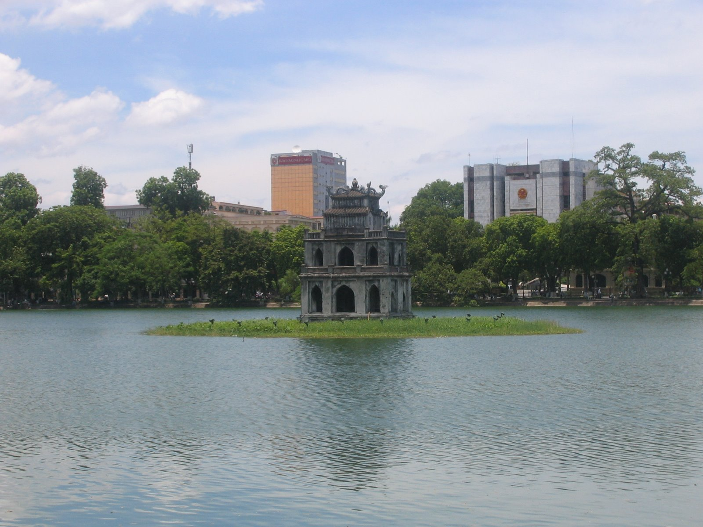
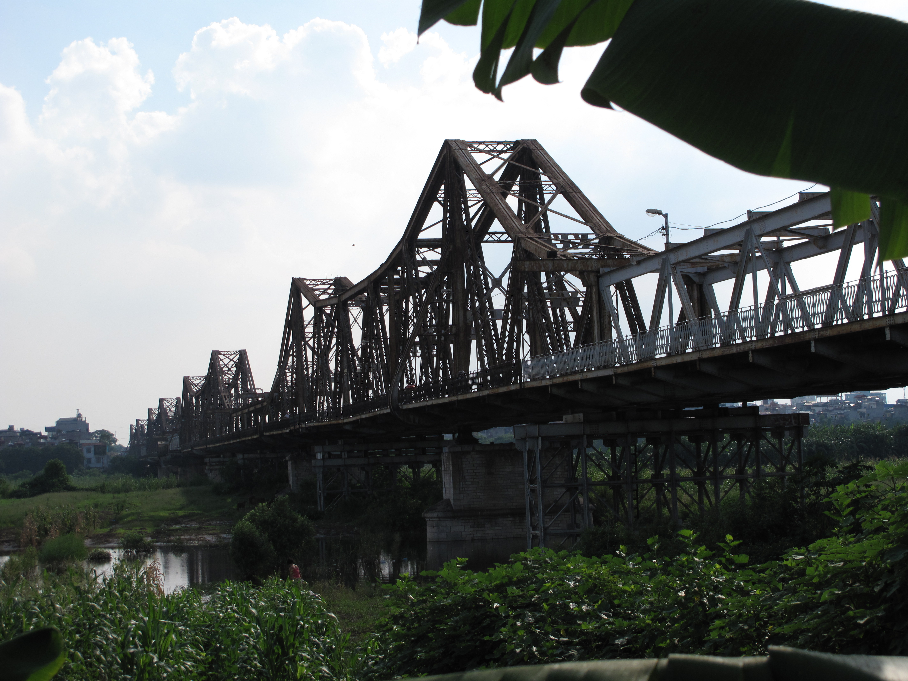
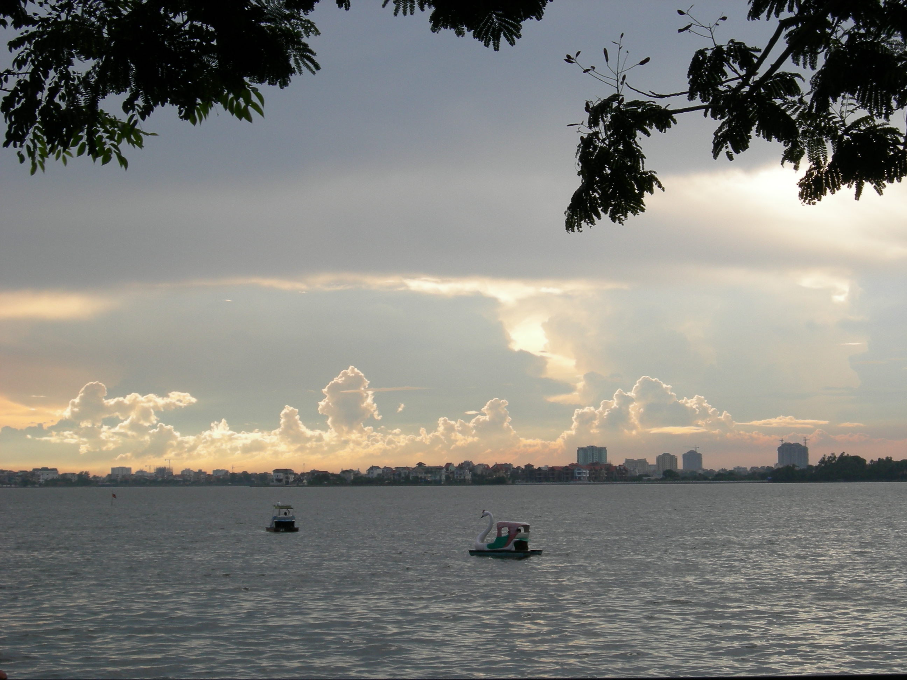
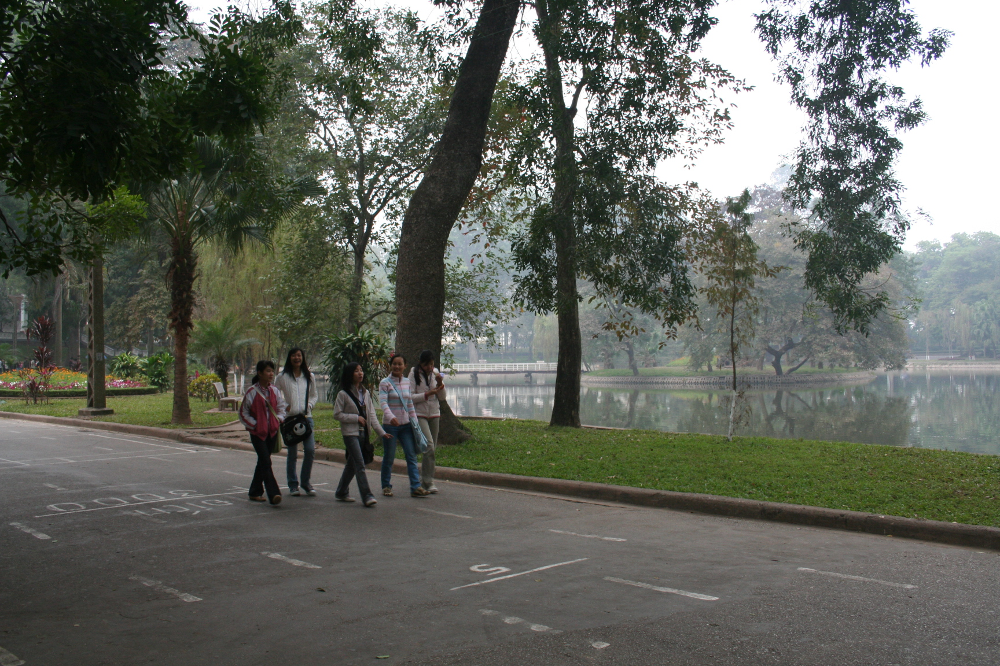
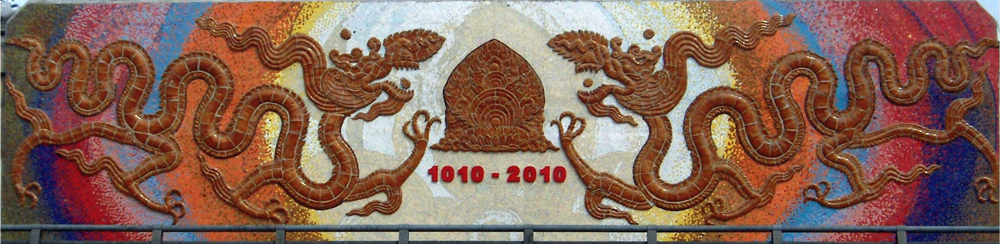

A trip around Hanoi
Hoàn Kiếm Lake

Photo by DHN on Wikipedia
Location
Long Biên Bridge

Photo by Tuabiht Rellahcs on Wikipedia
Location
West Lake (Hồ Tây)

Photo by Rungbachduong on Wikipedia
Location
Bách Thảo Park

Photo by Viethavvh on Wikipedia
Location
Hanoi Ceramic Mosaic Mural (Con đường gốm sứ ven sông Hồng)

Photo by Newone on Wikipedia
Location
Train Tracks
Photo by Mehdi Genest on Unsplash